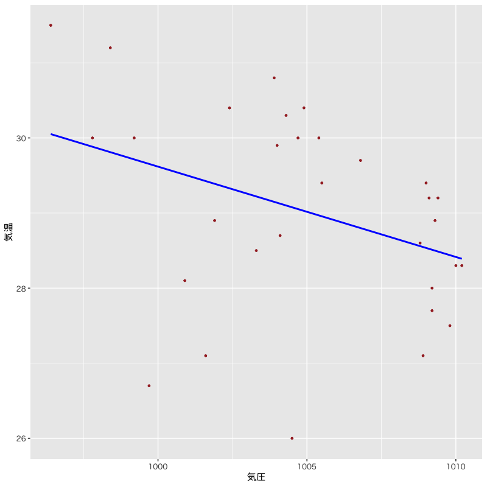

回帰分析
モデルの評価
(Press ? for help, n and p for next and previous slide)
講義概要
- 第1回 : 回帰モデルの考え方と推定
- 第2回 : モデルの評価
- 第3回 : モデルによる予測と発展的なモデル
回帰分析の復習
線形回帰モデル
- 目的変数 を 説明変数 で説明する関係式を構成
- 説明変数 : \(x_{1},\dotsc,x_{p}\) (p次元)
- 目的変数 : \(y\) (1次元)
回帰係数 \(\beta_{0},\beta_{1},\dotsc,\beta_{p}\) を用いた一次式
\begin{equation} y=\beta_{0}+\beta_{1}x_{1}+\dotsb+\beta_{p}x_{p} \end{equation}誤差項 を含む確率モデルで観測データを表現
\begin{equation} y_i=\beta_{0}+\beta_{1} x_{i1}+\cdots+\beta_{p}x_{ip}+\epsilon_i \quad (i=1,\dotsc,n) \end{equation}
簡潔な表現のための行列
デザイン行列 (説明変数)
\begin{equation} X= \begin{pmatrix} 1 & x_{11} & x_{12} & \cdots & x_{1p} \\ 1 & x_{21} & x_{22} & \cdots & x_{2p} \\ \vdots & \vdots & \vdots & & \vdots \\ 1 & x_{n1} & x_{n2} & \cdots & x_{np} \end{pmatrix} \end{equation}
簡潔な表現のためのベクトル
ベクトル (目的変数・誤差・回帰係数)
\begin{equation} \boldsymbol{y}= \begin{pmatrix} y_{1} \\ y_2 \\ \vdots \\ y_n \end{pmatrix},\quad \boldsymbol{\epsilon}= \begin{pmatrix} \epsilon_{1} \\ \epsilon_2 \\ \vdots \\ \epsilon_n \end{pmatrix},\quad \boldsymbol{\beta}= \begin{pmatrix} \beta_{0} \\ \beta_{1} \\ \vdots \\ \beta_{p} \end{pmatrix} \end{equation}
問題の記述
確率モデル
\begin{equation} \boldsymbol{y} =X\boldsymbol{\beta}+\boldsymbol{\epsilon}, \quad\boldsymbol{\epsilon}\sim\text{確率分布} \end{equation}回帰式の推定 : 残差平方和 の最小化
\begin{equation} S(\boldsymbol{\beta}) =(\boldsymbol{y}-X\boldsymbol{\beta})^{\mathsf{T}} (\boldsymbol{y}-X\boldsymbol{\beta}) \end{equation}
解の表現
解の条件 : 正規方程式
\begin{equation} X^{\mathsf{T}}X\boldsymbol{\beta} =X^{\mathsf{T}}\boldsymbol{y} \end{equation}解の一意性 : Gram 行列 \(X^{\mathsf{T}}X\) が正則
\begin{equation} \boldsymbol{\hat{\beta}} = (X^{\mathsf{T}}X)^{-1} X^{\mathsf{T}}\boldsymbol{y} \end{equation}
最小二乗推定量の性質
- あてはめ値 \(\boldsymbol{\hat{y}}=X\boldsymbol{\hat{\beta}}\) は \(X\) の列ベクトルの線形結合
残差 \(\boldsymbol{\hat{\epsilon}}=\boldsymbol{y}-\boldsymbol{\hat{y}}\) はあてはめ値 \(\boldsymbol{\hat{y}}\) と直交
\begin{equation} \boldsymbol{\hat{\epsilon}}^{\mathsf{T}}\boldsymbol{\hat{y}} =0 \end{equation}回帰式は説明変数と目的変数の 標本平均 を通過
\begin{equation} \bar{y} = (1,\bar{\boldsymbol{x}}^{\mathsf{T}})\boldsymbol{\hat{\beta}}, \quad \bar{\boldsymbol{x}} =\frac{1}{n}\sum_{i=1}^n\boldsymbol{x}_i, \quad \bar{y} =\frac{1}{n}\sum_{i=1}^ny_i, \end{equation}
寄与率
決定係数 (R-squared)
\begin{equation} R^2 = 1-\frac{\sum_{i=1}^n\hat{\epsilon}_i^2}{\sum_{i=1}^n(y_i-\bar{y})^2} \end{equation}自由度調整済み決定係数 (adjusted R-squared)
\begin{equation} \bar{R}^2 = 1-\frac{\frac{1}{n{-}p{-}1}\sum_{i=1}^n\hat{\epsilon}_i^2} {\frac{1}{n{-}1}\sum_{i=1}^n(y_i-\bar{y})^2} \end{equation}- 不偏分散で補正
解析の事例
実データによる例
- 気象庁より取得した東京の気候データ (再掲)
東京の8月の気候の分析
データの一部
loadNamespace(x) でエラー: ‘stargazer’ という名前のパッケージはありません
- 気温を説明する5種類の線形回帰モデルを検討
- モデル1 : 気温 = F(気圧)
- モデル2 : 気温 = F(日射)
- モデル3 : 気温 = F(気圧, 日射)
- モデル4 : 気温 = F(気圧, 日射, 湿度)
- モデル5 : 気温 = F(気圧, 日射, 雲量)
分析の視覚化
関連するデータの散布図

Figure 1: 散布図
モデル1の推定結果

Figure 2: モデル1
モデル2の推定結果
Figure 3: モデル2
モデル3の推定結果

Figure 4: モデル3
観測値とあてはめ値の比較

Figure 5: モデルの比較
モデルの比較
決定係数(\(R^{2}\), Adjusted \(R^{2}\))
loadNamespace(x) でエラー: ‘stargazer’ という名前のパッケージはありません
あてはめ値の性質
あてはめ値
さまざまな表現
\begin{align} \boldsymbol{\hat{y}} &=X\boldsymbol{\hat{\beta}}\\ &\qquad(\boldsymbol{\hat{\beta}}=(X^{\mathsf{T}}X)^{-1}X^{\mathsf{T}}\boldsymbol{y}を代入)\\ &=X(X^{\mathsf{T}}X)^{-1}X^{\mathsf{T}}\boldsymbol{y} && (A) \\ &\qquad(\boldsymbol{y}=X\boldsymbol{\beta}+\boldsymbol{\epsilon}を代入)\\ &=X(X^{\mathsf{T}}X)^{-1}X^{\mathsf{T}}X\boldsymbol{\beta} +X(X^{\mathsf{T}}X)^{-1}X^{\mathsf{T}}\boldsymbol{\epsilon}\\ &=X\boldsymbol{\beta} +X(X^{\mathsf{T}}X)^{-1}X^{\mathsf{T}}\boldsymbol{\epsilon} && (B) \\ \end{align}- (A) あてはめ値は 観測値の重み付けの和 で表される
- (B) あてはめ値と観測値は 誤差項 の寄与のみ異なる
あてはめ値と誤差
残差と誤差の関係
\begin{align} \boldsymbol{\hat{\epsilon}} &=\boldsymbol{y}-\boldsymbol{\hat{y}}\\ &=\boldsymbol{\epsilon} -X(X^{\mathsf{T}}X)^{-1}X^{\mathsf{T}} \boldsymbol{\epsilon}\\ &=\bigl(I -X(X^{\mathsf{T}}X)^{-1}X^{\mathsf{T}} \bigr) \boldsymbol{\epsilon} && (C) \\ \end{align}- (C) 残差は 誤差の重み付けの和 で表される
ハット行列
定義
\begin{equation} H= X(X^{\mathsf{T}}X)^{-1}X^{\mathsf{T}} \end{equation}ハット行列 \(H\) による表現
\begin{align} \boldsymbol{\hat{y}} &=H\boldsymbol{y}\\ \boldsymbol{\hat{\epsilon}} &=(I-H)\boldsymbol{\epsilon} \end{align}- あてはめ値や残差は \(H\) を用いて簡潔に表現される
ハット行列の性質
- 観測データ(デザイン行列)のみで計算される
- 観測データと説明変数の関係を表す
対角成分 (テコ比; leverage) は観測データが自身の予測に及ぼす影響の度合を表す
\begin{equation} \hat{y}_{j} = (H)_{jj}y_{j} + \text{(それ以外のデータの寄与)} \end{equation}- \((A)_{ij}\) は行列 \(A\) の \((i,j)\) 成分
- テコ比が小さい : 他のデータでも予測が可能
- テコ比が大きい : 他のデータでは予測が困難
推定量の統計的性質
最小二乗推定量の性質
推定量と誤差の関係
\begin{align} \boldsymbol{\hat{\beta}} &=(X^{\mathsf{T}}X)^{-1}X^{\mathsf{T}}\boldsymbol{y}\\ &=(X^{\mathsf{T}}X)^{-1}X^{\mathsf{T}}(X\boldsymbol{\beta}+\boldsymbol{\epsilon}) \\ &=(X^{\mathsf{T}}X)^{-1}X^{\mathsf{T}}X\boldsymbol{\beta} +(X^{\mathsf{T}}X)^{-1}X^{\mathsf{T}}\boldsymbol{\epsilon}\\ &=\boldsymbol{\beta} +(X^{\mathsf{T}}X)^{-1}X^{\mathsf{T}}\boldsymbol{\epsilon} \end{align}正規分布の重要な性質 (再生性)
正規分布に従う独立な確率変数の和は正規分布に従う
推定量の分布
- 誤差の仮定 : 独立，平均0 分散 \(\sigma^{2}\) の正規分布
推定量は以下の多変量正規分布に従う
\begin{align} \mathbb{E}[\boldsymbol{\hat{\beta}}] &=\mathbb{E}[\boldsymbol{\beta} +(X^{\mathsf{T}}X)^{-1}X^{\mathsf{T}}\boldsymbol{\epsilon}] =\boldsymbol{\beta}\\ \mathrm{Cov}(\boldsymbol{\hat{\beta}}) &=\mathbb{E}[ (\boldsymbol{\hat{\beta}}-\boldsymbol{\beta}) (\boldsymbol{\hat{\beta}}-\boldsymbol{\beta})^{\mathsf{T}}] =\sigma^{2}(X^{\mathsf{T}}X)^{-1} \end{align}\begin{equation} \boldsymbol{\hat{\beta}} \sim \mathcal{N}(\boldsymbol{\beta},\sigma^{2}(X^{\mathsf{T}}X)^{-1}) \end{equation}
通常 \(\sigma^{2}\) は未知，必要な場合には不偏分散で代用
\begin{equation} \hat{\sigma^{2}} =\frac{S}{n{-}p{-}1} =\frac{1}{n{-}p{-}1}\boldsymbol{\hat{\epsilon}}^{\mathsf{T}}\boldsymbol{\hat{\epsilon}} =\frac{1}{n{-}p{-}1}\sum_{i=1}^n\hat{\epsilon}_i^2 \end{equation}- これらの性質を利用してモデルの評価を行う
実習
R : 乱数を用いた人工データの生成
正規乱数を用いた線形単回帰モデル
set.seed(987) # 乱数のシード値を設定 x_obs <- tibble(x0 = 1, x1 = c(1,3,5,7)) # 説明変数の観測値 epsilon <- rnorm(nrow(x_obs), sd = 0.5) # 誤差項の生成 beta <- c(2, -3) # 回帰係数 toy_data <- x_obs |> # 目的変数の観測値を追加 mutate(y = as.vector(as.matrix(x_obs) %*% beta) + epsilon) toy_lm <- lm(y ~ x1, data = toy_data) # 回帰係数の推定 coef(toy_lm) # 回帰係数の取得 summary(toy_lm) # 分析結果の概要の表示
R : 数値実験 (Monte-Carlo法)
実験のためのコードは以下のようになる
mc_num <- 5000 # 実験回数を指定 mc_trial <- function() { # 1回の試行を行うプログラム ## 乱数生成と推定の処理 return(返り値)} mc_data <- replicate(mc_num, mc_trial()) |> # Monte-Carlo実験 t() |> as_tibble() # 転置(関数t())してデータフレームに変換 #' 適切な統計・視覚化処理 (下記は例) mc_data |> summarise(across(everything(), var)) # 各列の分散の計算 ggpairs(mc_data) # 散布図行列の描画 tibble(x = mc_data[[k]]) |> # k列目のベクトルで新しいデータフレームを作成 ggplot(aes(x = x)) + geom_histogram() # k列目のデータのヒストグラム
練習問題
- 最小二乗推定量の性質を
数値実験 (Monte-Carlo法) により
確認しなさい
以下のモデルに従う人工データを生成する
説明変数の観測データ :
\begin{equation} \{1, 20, 13, 9, 5, 15, 19, 8, 3, 4\} \end{equation}確率モデル :
\begin{equation} y=-1+2\times x + \epsilon, \quad \epsilon\sim\mathcal{N}(0,2) \end{equation}- 観測データから回帰係数を推定する
- 実験を複数回繰り返し 推定値(\(\hat\beta_{0},\hat\beta_{1}\))の分布を調べる
誤差の評価
寄与率 (再掲)
決定係数 (R-squared)
- 回帰式で説明できるばらつきの比率
\begin{equation} R^2 = 1-\frac{\sum_{i=1}^n\hat{\epsilon}_i^2}{\sum_{i=1}^n(y_i-\bar{y})^2} \end{equation}自由度調整済み決定係数 (adjusted R-squared)
- 決定係数を不偏分散で補正
\begin{equation} \bar{R}^2 = 1-\frac{\frac{1}{n{-}p{-}1}\sum_{i=1}^n\hat{\epsilon}_i^2} {\frac{1}{n{-}1}\sum_{i=1}^n(y_i-\bar{y})^2} \end{equation}
各係数の推定量の分布
- 推定された回帰係数の精度を評価
- 誤差 \(\epsilon\) の分布は平均0 分散 \(\sigma^2\) の正規分布
\(\boldsymbol{\hat{\beta}}\) の分布 : \(p{+}1\) 変量正規分布
\begin{equation} \boldsymbol{\hat{\beta}} \sim \mathcal{N}(\boldsymbol{\beta},\sigma^{2}(X^{\mathsf{T}}X)^{-1}) \end{equation}\(\hat{\beta}_j\) の分布 : 1変量正規分布
\begin{equation} \hat{\beta}_{j} \sim \mathcal{N}(\beta_{j},\sigma^{2}((X^{\mathsf{T}}X)^{-1})_{jj}) =\mathcal{N}(\beta_{j},\sigma^{2}\zeta_{j}^{2}) \end{equation}- \((A)_{jj}\) は行列 \(A\) の \((j,j)\) (対角)成分
標準誤差
標準誤差 (standard error)
- \(\hat{\beta}_j\) の標準偏差の推定量
\begin{equation} \mathrm{s.e.}(\hat{\beta}_{j}) = \hat{\sigma}\zeta_j = \sqrt{\frac{1}{n{-}p{-}1}\sum_{i=1}^n\hat{\epsilon}_i^2} \cdot \sqrt{((X^{\mathsf{T}}X)^{-1})_{jj}} \end{equation}- 未知母数 \(\sigma^{2}\) は不偏分散 \(\hat{\sigma}^{2}\) で推定
- \(\hat{\beta}_j\) の精度の評価指標
実習
練習問題
- 数値実験により
標準誤差の性質を確認しなさい
人工データを用いて標準誤差と真の誤差を比較する
#' 標準誤差は以下のようにして取り出せる toy_lm <- lm(formula, toy_data) summary(toy_lm)$coefficients # 係数に関する情報はリストの要素として保管されている summary(toy_lm)$coefficients[,2] # 列番号での指定 summary(toy_lm)$coef[,"Std. Error"] # 列名での指定．coef と省略してもよい
- 広告費と売上データを用いて係数の精度を議論する
- 東京の気候データを用いて係数の精度を議論する
係数の評価
\(t\)統計量
回帰係数の分布 に関する定理
\(t\)統計量 (\(t\)-statistic)
\begin{equation} % \text{(t統計量)}\quad t = \frac{\hat{\beta}_j-\beta_j}{\mathrm{s.e.}(\hat{\beta}_{j})} = \frac{\hat{\beta}_j-\beta_j}{\hat{\sigma}\zeta_{j}} \end{equation}は自由度 \(n{-}p{-}1\) の \(t\)分布に従う
- 証明には以下の性質を用いる
- \(\hat{\sigma}{}^2\) と \(\boldsymbol{\hat{\beta}}\) は独立となる
- \((\hat{\beta}_j-\beta_j)/(\sigma\zeta_j)\) は標準正規分布に従う
- \((n{-}p{-}1)\hat{\sigma}^2/\sigma^2=S(\boldsymbol{\hat{\beta}})/\sigma^2\) は自由度 \(n{-}p{-}1\) の \(\chi^{2}\) 分布に従う
- 証明には以下の性質を用いる
\(t\)統計量による検定
- 回帰係数 \(\beta_j\) が回帰式に寄与するか否かを検定
- 帰無仮説 \(H_{0}\) : \(\beta_j=0\) (\(t\)統計量が計算できる)
- 対立仮説 \(H_{1}\) : \(\beta_j\neq0\)
\(p\)値 : 確率変数の絶対値が \(|t|\) を超える確率
- \(f(x)\) は自由度 \(n{-}p{-}1\) の \(t\)分布の確率密度関数
\begin{equation} \text{(\(p\)値)} = 2\int_{|t|}^\infty f(x)dx \quad\text{(両側検定)} \end{equation}帰無仮説 \(H_{0}\) が正しければ \(p\)値は小さくならない
実習
練習問題
- 数値実験により
\(t\)統計量の性質を確認しなさい
人工データを用いて\(t\)統計量の分布を確認する
#' t統計量とそのp値は以下のようにして取り出せる toy_lm <- lm(formula, toy_data) summary(toy_lm)$coef[,c("t value","Pr(>|t|)")] # 列名での指定 summary(toy_lm)$coef[,3:4] # 列番号での指定
- 広告費と売上データを用いて係数の有意性を議論する
- 東京の気候データを用いて係数の有意性を議論する
モデルの評価
\(F\)統計量
ばらつきの比 に関する定理
\(\beta_{1}=\dotsb=\beta_{p}=0\) ならば \(F\)統計量 (\(F\)-statistic)
\begin{equation} % \text{(F統計量)}\quad F= \frac{\frac{1}{p}S_{r}}{\frac{1}{n{-}p{-}1}S} % =\frac{\frac{1}{p}\sum_{i=1}^n(\hat{y}_i-\bar{y})^2} % {\frac{1}{n{-}p{-}1}\sum_{i=1}^n(y_i-\hat{y}_i)^2} =\frac{n{-}p{-}1}{p}\frac{R^2}{1-R^2} \end{equation}は自由度 \(p,n{-}p{-}1\) の \(F\)分布に従う
- 証明には以下の性質を用いる
- \(S_{r}\) と \(S\) は独立となる
- \(S_{r}/\sigma^2\) は自由度 \(p\) の \(\chi^{2}\) 分布に従う
- \(S/\sigma^2\) は自由度 \(n{-}p{-}1\) の \(\chi^{2}\) 分布に従う
- 証明には以下の性質を用いる
\(F\)統計量を用いた検定
- 説明変数のうち1つでも役に立つか否かを検定
- 帰無仮説 \(H_{0}\) : \(\beta_{1}=\dotsb=\beta_{p}=0\) (\(S_r\) が \(\chi^2\) 分布になる)
- 対立仮説 \(H_{1}\) : \(\exists j\;\beta_j\neq0\)
\(p\)値 : 確率変数の値が \(F\)を超える確率
- \(f(x)\) は自由度 \(p,n{-}p{-}1\) の \(F\)分布の確率密度関数
\begin{equation} \text{(\(p\)値)} = \int_{F}^\infty f(x)dx \quad\text{(片側検定)} \end{equation}帰無仮説 \(H_{0}\) が正しければ \(p\)値は小さくならない
実習
練習問題
- 数値実験により
\(F\)統計量の性質を確認しなさい
人工データを用いて\(F\)統計量の分布を確認しなさい
#' F統計量とその自由度は以下のようにして取り出せる toy_lm <- lm(formula, toy_data) summary(toy_lm)$fstat summary(toy_lm)$fstatistic # 省略しない場合
- 広告費と売上データのモデルの有効性を議論しなさい
- 東京の気候データのモデルの有効性を議論しなさい
補足
R : 診断プロット
回帰モデルのあてはまりを視覚的に評価
- Residuals vs Fitted: あてはめ値(予測値)と残差の関係
- Normal Q-Q: 残差の正規性の確認
- Scale-Location: あてはめ値と正規化した残差の関係
- Residuals vs Leverage: 正規化した残差とテコ比の関係
などが用意されている
#' 関数 stats::lm() による推定結果の診断プロット tw_lm6 <- lm(temp ~ press + solar + rain, data = tw_subset) #' 関数 ggfortify::autoplot() を利用する #' 必要であれば 'install.packages("ggfortify")' を実行 library(ggfortify) autoplot(tw_lm6) #' 診断プロットは1から6まで用意されており 1,2,3,5 がまとめて表示される #' 個別に表示する場合は 'autoplot(tw_lm6, which = 1)' のように指定する #' 詳細は '?ggfortify::autoplot.lm' を参照
次回の予定
- 第1回 : 回帰モデルの考え方と推定
- 第2回 : モデルの評価
- 第3回 : モデルによる予測と発展的なモデル